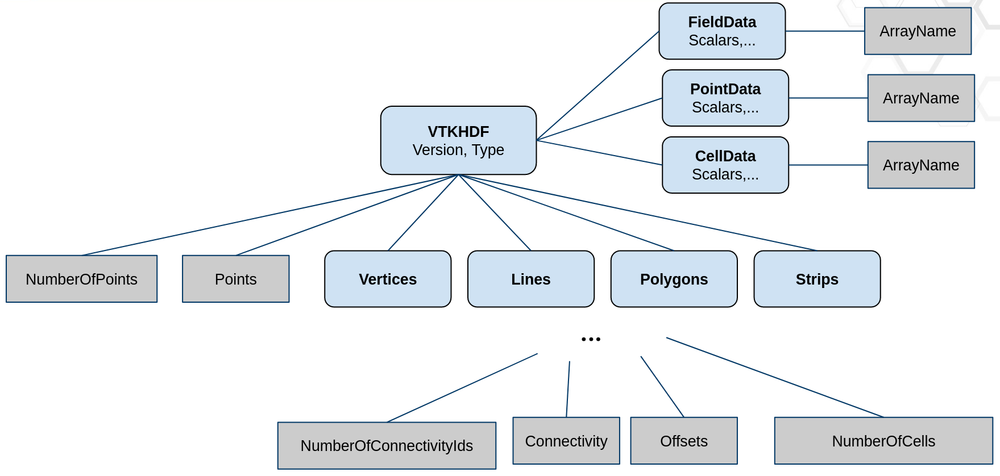
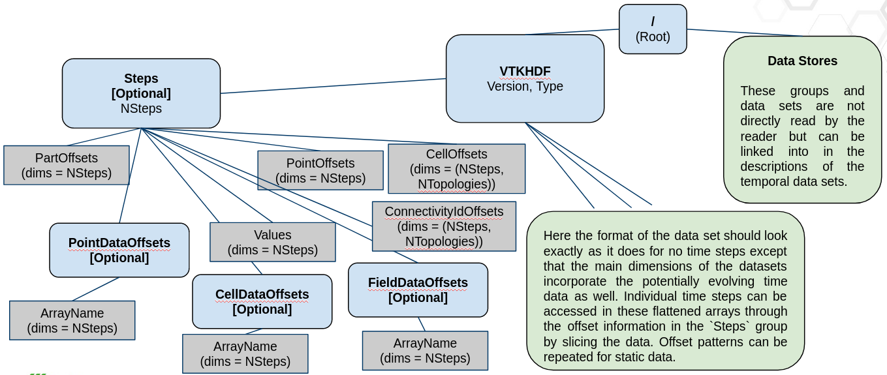
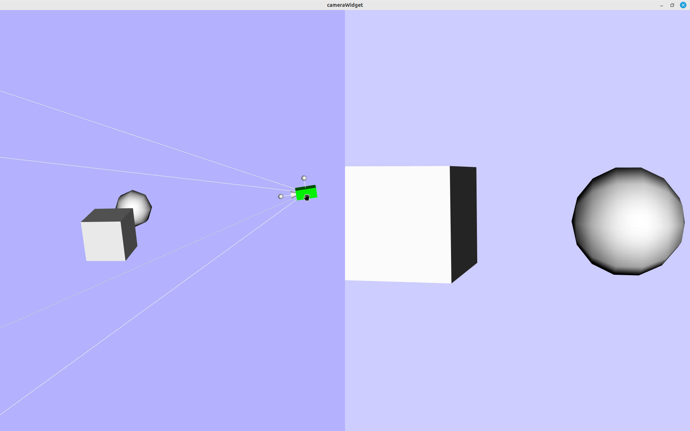
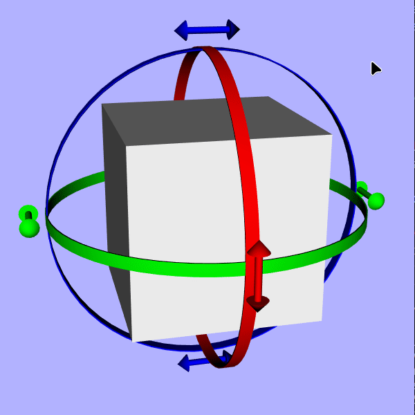
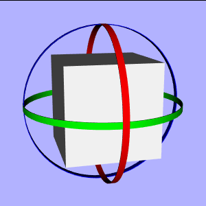
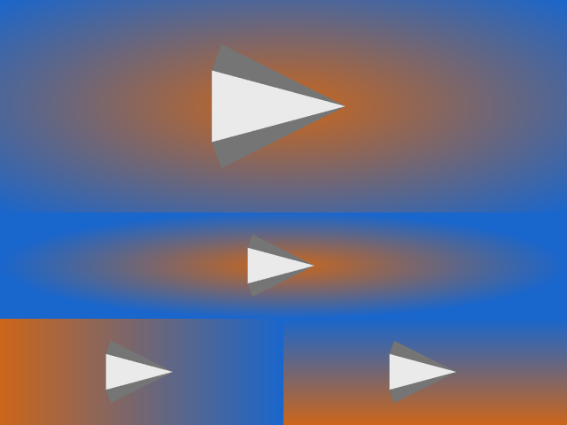

9.3#
Released on 2023-11-09.
9.3.0 Release Notes#
Changes made since VTK 9.2.0 include the following.
Changes {#changes}#
Build {#build}#
Compile fixes for C++20 builds with gcc11.
Apply /utf-8 option for MSVC builds for standardization.
Headers
vtkBlockSortHelper.hfromVTK::RenderingVolumeandvtkDIYKdTreeUtilities.hfromVTK::FiltersParallelDIY2are now installed.The
vtk-config.cmakeCMake package no longer permits unknown components to be listed and will report them as not found. This helps ensure the usabilityVTK::ComponentwhenVTK_Component_FOUNDis set.The
vtk_encode_stringCMake API now supports theABI_MANGLE_SYMBOL_BEGIN,ABI_MANGLE_SYMBOL_END, andABI_MANGLE_HEADERarguments to specify a mangling mechanism. Previously (where mangling was supported), it was hard-coded to VTK’s own mangling decisions.Updated the vendored
fmtlibrary has been to 10.1.1.The vendored
fmtlibrary has been updated to 10.1.1 to aid with C++17 compatibility.
Charts {#charts}#
Uniformize the
vtkPlotAPI for color setters/getter, in order to fit the API ofvtkPenandvtkBrush. Methods using floating point parameters (e.g.vtkPlot::SetColor(double r, double g, double b)) are now suffixed withFto avoid confusion with equivalent functions using unsigned chars. The former ones are marked as deprecated.vtkChartParallelCoordinates’s default selection behavior has been simplified. Multiple selection is no longer supported inSELECTION_DEFAULT.
Copyright {#copyright}#
SPDX information have been added and replace all previous copyright declaration in all of VTK. See more information on the process used.
Core {#core}#
OSPRay has been disabled for older x86_64 processors which do not support SSE4.1.
Removed hidden private dependency of
CommonCoreonCommonDataModel.Nested parallelism has been disabled by default for all backends except TBB, which should improve performance. Enabling nested parallelism is still possible when sub-task are coarse enough, using the
SetNestedParallelismmethod or aLocalScope.Improved
vtkSMPToolsSTDThread backend. A common, global, thread pool is now shared between all SMP calls, so they no longer create threads.
Data {#data}#
vtkPolyLine::Clipimproved to generate polylines whenever possible.vtkCompositeDataSet::ShallowCopynow does an actual shallow copy up to array pointers.Fixed calculation of
vtkPyramidcentroid.
Filters {#filters}#
VTK’s interruption method has been updated to use
CheckAbort.CheckAbortwill check the current filter’sAbortExecuteflag as well as any upstream filter’sAbortExecuteflag. If any are set, the filter will output empty data and tell downstream filters to abort as well. Currently,vtkContourGrid,vtkClipDataSet,vtkShrinkFilter, andvtkRTAnalyticSource.vtkmContour’sComputeScalarsparameter has been fixed to behave likevtkContourFilter.vtkExtractCellshas been relocated fromFilters/ExtractiontoFilters/Core.vtkTemporalDataSetCachenow deep copies data by default.Fix SIGSEGV on
vtkCompositeDataProbeFilter.vtkDataSetAttributesFieldList::vtkInternals.NumberOfInputs was initialized to be -1, which causes UnionFieldList to pass wrong argument to PreExtendForUnion. It is now fixed to be 0.
Add
ComponentNameinvtkImageAlgorithmand subclasses.All vtkImageAlgorithm subclasses will now respect and pass on the component names associated with data arrays that their processing.
Geovis {#geovis}#
Moved
vtkCompassWidgetandvtkCompassRepresentationfromGeovis/CoretoInteraction/Widgets.
Interaction {#interaction}#
vtkSelectPolyDatanow passes cell data attributes to the selected and unselected outputs.Output support fixed for
vtkSelectPolyDatawhenGenerateSelectionScalarsis enabled.
I/O {#io}#
vtkPLYReaderchanged to use newvtkResourceStreamIO.vtkPLY::get_ascii_itemsignature changed fromvoid(const char*, int, int*, unsigned int*, double*)tovoid(vtkResourceParser*, int, int*, unsigned int*, double*)vtkPLY::ply_readsignature changed fromPlyFile*(std::istream*, int*, char***)toPlyFile*(vtkResourceStream*, int*, char***)vtkPLY::get_wordssignature changed fromvoid(std::istream* is, std::vector<char*>* words, char line_words[], char orig_line[])tovoid(vtkResourceParser* is, std::vector<char*>* words, char line_words[], char orig_line[])
vtkPIOReader::GetTimeDataArraynow returnsnullptrwhen the index is out-of-range.CGNS fixed compilation with HDF5 1.12.
vtkSTLReaderfixed to not consume new lines erroneously.Fix UT record support in
vtkDICOMParserPreviously, vtkDICOMParser failed to parse DICOM files with UT records due to incorrectly reading their length field. This has now been fixed.
Fix for reading binary XML files > 2Gb on Windows.
Fix an error encountered when reading binary format XML files on Windows - a missing define for Expat caused the offset used reading the position in the file to be limited to 2Gb. Fix the define, and add a check when using external Expat that the necessary feature,
XML_LARGE_SIZE, is enabled.
Python {#python}#
OSMesa VTK wheels are now provided. These are available on VTK’s official channels (the VTK repository’s Python index and
vtk.org), but not PyPI because OSMesa conflicts with other OpenGL packages.The numpy adapter (
util.numpy_support) convertsnumpy.int8arrays tovtkSignedCharArrayrather thanvtkCharArray, to ensure that signedness is preserved by the conversion.
Rendering {#rendering}#
Fix wireframe render shading issues for some GPUs.
VTK previously exported a lot of its shader strings from its libraries. Now only those that are available through installed headers are available. These include:
vtkTextureObjectVSfromVTK::RenderingOpenGL2vtkCompositeZPassFSfromVTK::RenderingParallel
Volume label mapping improved to properly index upto 256 labels each with their own color, opacity and gradient transfer functions.
System {#system}#
vtkExecutableRunner’s argument splitting system has been overhauled. There are now 2 modes to execute a command using theExecuteInSystemShellflag:When
ExecuteInSystemShellistrue(default), the class will execute the given command in the system shell, leaving the actual argument split to the shell.When
ExecuteInSystemShellisfalse, you will have to split the command and its arguments yourself using the newAddArgumentAPI.
Third Party {#third-party}#
VTK’s vendored
zliblibrary has been updated to 1.2.13.VTK’s vendored
fmtlibrary has been updated to 9.1.0.VTK’s vendored
iosslibrary has been updated to the 2022-10-14 release.VTK’s vendored
libtifflibrary has been updated to 4.6.0. The new version fixes a number of CVEs.VTK’s vendored
netcdflibrary has been updated to 4.9.2.VTK’s vendored
mpi4pylibrary has been updated to 3.1.4.VTK’s vendored
expatlibrary has been updated to 2.4.8.VTK’s vendored
libxml2library has been updated to 2.10.1.VTK’s vendored
PDALlibrary has been updated to 2.1.Added fix for
Projcompatibility withwindows.hwith the VTKSTRICTdefinition.
New Features {#new-features}#
ABI Namespace {#abi-namespace}#
VTK is now wrapped in a customizable
inline namespace(VTK_ABI_NAMESPACE). To wrap code in the ABI namespace useVTK_ABI_NAMESPACE_BEGINandVTK_ABI_NAMESPACE_END. This change means you can now link different versions of VTK into the same runtime without generating conflicts between VTK symbols. Note: this does not prevent conflicts with third-part symbol (including VTK-m).Where to put namespaces:
Around classes, functions, variables, typedefs (optional).
Inner most named namespaces, there is no need to use the ABI namespace inside of an anonymous namespace.
ABI namespace should never be around a named namespace.
Forward declarations of classes/functions/variables/typedefs require ABI namespace if their implementation/declarion was inside the ABI namespace.
Where not to put namespace:
Do not namespace around non-exported classes/functions/variables/typedefs (usually found in tests).
Do not namespace around main functions.
Python bindings cannot be namespaced.
Most Utilities are not namespaced, including vtksys/vtkmeta/ksys.
It doesn’t hurt anything, but it is not required to namespace symbols that are compiled into a driver (such as Wrapping Tools).
Some VTK modules have C interfaces that cannot be mangled:
VTK::CommonCore (GetVTKVersion)
VTK::IOXML (Provides a C API,
vtkXMLWriterC_-)VTK::WrappingPythonCore (Python Wrapping cannot have mangling)
Thirdpary Libraries and their VTK module wrappers do not have mangling:
VTK::metaio
VTK::xdmf2
VTK::vpic
All C libraries (ie. HDF5, netCDF, etc.)
VTKm CUDA Accelerators do not get mangled:
VTK::AcceleratorsVTKmCore
VTK::AcceleratorsVTKmDataModel
VTK::AcceleratorsVTKmFilters
Build {#build}#
VTK_LOGGING_TIME_PRECISIONcan be used to change the precision of loguru timing output (whenVTK_ENABLE_LOGGINGis ON).VTK_ZSPACE_USE_COMPAT_SDKcan be used to control runtime search for zSpace Core Compatibility libraries. Default is ON, disabling the search.VTK_GENERATE_SPDXcan be used to generate SPDX files for each VTK module. Default is OFF. The generation of SPDX files is considered experimental.Added
VTK_USE_FUTURE_BOOLconfigure-time variable. The codebase contains many variables typed asintthat really should bebool. But changing them breaks backwards compatibility, and so avtkTypeBooltypedef was introduced which is defined to eitherintorbooldepending on the newVTK_USE_FUTURE_BOOLconfigure-time variable. This allows for the piecemeal changing of manyintvariables tovtkTypeBool.
Charts {#charts}#
vtkChartParallelCoordinatesnow has a chart legend which can be toggled with theSetShowLegendmethod. This legend can be customized using thevtkChartLegendAPI.vtkPlotParallelCoordinatesnow has the option to set a preconfigured color array usingSetColorModeToDefault.Fixed bug where calling
vtkPlotBar.GetLookupTablecaused a segmentation fault when no data had been plotted.You can now set an array name for the
vtkPlotHistogram2D. This allows you to set an array that is not scalar, ie. an array with a number of components greater than 1.
Core {#core}#
vtkMath::GetPointAlongLinecan be used to compute a point along a line defined by two points and an offset.vtkValueFromStringis a new low-level function that converts a string to an integer, a floating-point value or a boolean.vtkValueFromStringis faster than standard library functions such as thestd::strto*function family.VTK now provides a way to obtain type names at compile time in the
Common/Core/vtkTypeName.hheader:#include "vtkTypeName.h" // ... std::string typeName = vtk::TypeName<vtkImageData>(); std::cout << typeName << std::endl;
The
vtkStringTokenclass introduces a utility for hashing strings at either compile or run-time and using the resulting integers as tokens. Additional utilities regarding compile-time hashing have also been added:vtkStringManagerholds strings hashed at runtime. This makes it possible for the string-token class to return the original string to you in some cases. Because the manager holds a map from string-hash to string, only a single copy of the string is stored no matter how many copies of the token exist.Added new
vtk::literalsnamespace for creating hashes and tokens at compile time.""_hash- returns a 32-bit integer hash of the given string.""_token- returns avtkStringTokeninstance of the given string. Note that because the hash is computed during compilation, you may not call the token’sData()method to retrieve the string unless it is inserted at run time by some other code.
Since hashing is performed at build time, the following example is possible:
#include "vtkStringToken.h" using namespace vtk::literals; vtkStringToken t; switch (t.GetId()) { case "foo"_hash: foo(); break; case "bar"_hash: bar(); break; default: vtkErrorMacro("Unknown token " << t.Data()); break; }
VTK now provides a way to iterate over a class and all its ancestor types (as long as they inherit
vtkObjectBaseand use thevtkTypeMacro()to defineSuperclasstype-aliases). Thevtk::ParentClasses<T>::enumerate()function will invoke a functor you pass onTand each superclass ofT. This is used by a newvtk::Inheritance<T>()function that inserts the name of each class inherited byTinto a container you pass to it. SeeCommon/Core/Testing/Cxx/TestInheritsfor example usage.vtkThreadedCallbackQueuecan be used to run functions in the background on different threads. Use thePushmethod to add functions to the queue. ThePushmethod returns avtkSmartPointer<vtkThreadedCallbackQueue::vtkSharedFutureBase>, which lets users synchronize tasks.
Data {#data}#
Added
vtkImplicitArraytemplate class that implements a read-onlyvtkGenericDataArrayinterface which transforms an implicit function mapping integers to values into a practically zero costvtkDataArray. This is helpful in cases where one needs to attach data to data sets and memory efficiency is paramount.Additional backends have been added in the
vtkImplicitArrayframework:vtkAffineArraythat gets constructed with a slope and intercept and then returns values linearly depending on the queried index.vtkCompositeArraythat takes anstd::vector<vtkDataArray*>at construction and returns values as if the list has been concatenated into one array.vtkConstantArraythat gets constructed with a given value and then returns that same value regardless of the index queried.vtkStdFunctionArraywhich uses astd::function<ValueType(int)>backend capable of covering almost any function one might want to use.vtkIndexedArraythat takes an indexing array (eithervtkIdListorvtkDataArray) and a basevtkDataArrayat construction and returns values indirected using the indexing array to give access to a shuffled array without the memory cost.
Read more about
vtkImplicitArrayshere.
ProcessIdsdata array is now accessible directly fromvtkDataSetAttributesjust like any other data array (e.g GlobalIds or Normals).Added
vtkCellGrid. It exists to support finite element techniques using novel function spaces, which violate vtkDataSet’s assumptions – especially discontinuous Galerkin (DG) elements.vtkPolyhedronUtilitiesadded to support polyhedron decomposition into tetrahedra. Improves downstream filter results (e.g. contours) on polyhedrons with concave faces.Added new
vtkPolyhedron::TriangulateFacesmethod.Added new
vtkStaticFaceHashLinksTemplatetemplated class that can be used to group faces of an unstructured grid and eliminates duplicates.Added
vtkHyperTreeGridGeometricLocatorwhich is a geometric locator forvtkHyperTreeGriddatasets.vtkHyperTreeGridhas a new type of cursor, calledunlimitedcursors.vtkHyperTreeGridNonOrientedUnlimitedMooreSuperCursorandvtkHyperTreeGridNonOrientedUnlimitedGeometryCursorhave been added.vtkDataSet::GetCellNumberOfFacescan be used to get the number of faces in a given cell.vtkBoundingBox::ComputeBoundsadded to compute the bounds for a set of points. This is used for theGetCellBoundsmethod invtkUnstructuredGrid,vtkPolyData, andvtkExplicitStructuredGrid.Added
vtkCompositeDataSet::CompositeShallowCopywhich shallow copies up to dataset pointers only.Add new
vtkNonLinearCell::StableClipmethod andvtkQuadraticTetra::StableClipimplementation. The goal of this clip is to only decompose a cell if its actually clipped, otherwise keep the non-linear cell in its entirety. Note: this clipping approach will lead to topological holes between decomposed cells and the remaining non-linear cells.vtkPolyData::BuildCellshas been multithreaded.Improved performance of
vtkUnstructuredGrid’sIsCellBoundary/GetCellNeighborsmethods.Improved stability of
vtkCellLocator::FindClosestPointWithinRadius.Fix
ResampleWithDataSetwith an HTG source using MPI.In previous versions, distributed HTG where incorrectly resampled, which could led to the apparition of undesired NaN values in the output. Now, the ResampleWithDataset filter works as expected for distributed HTG.
Fix
HyperTreeiterator inExtractElementsmethod.This branch fixes a bug when using Hover On Cell on a composite HTG Hercule base. The indexes used in the ExtractElements method in order to sanitize the output HTG can be wrong for some bases. One need to use the appropriate HyperTreeGridIterator to get correct indexes.
Documentation {#documentation}#
The VTK documentation has undergone a major update and consolidation to enhance its usefulness for developers. The
/Documentation/docsdirectory now contains the contents and configuration for the Sphinx-based website, published on the ReadTheDocs platform at https://docs.vtk.org. This consolidates all existing documentation for VTK, including the newly added list of supported data formats, API of all VTK public CMake modules, the VTK formats specification (previously part of vtk-examples), and the general information about the VTK project. Software process and conventions documentation has also been moved from docs.google.com to the new website.In addition to the documentation website, two new resources have been introduced: the VTK book, which hosts the markdown version of the VTK book at https://book.vtk.org and VTK examples at https://examples.vtk.org, which contain many examples with redirects put in place to ensure the previous URL remains functional. Many other updates to the documentation have also been made, including improved documentation structure, removal of obsolete documents, and addition of imported third-party projects to the developer guide. VTK documentation now follows a versioning system and is actively maintained alongside the code.
Contributions and feedback are welcome for all three websites to ensure that the VTK documentation remains up-to-date.
Next steps
The next steps for the VTK documentation project include setting up a versioning system for docs, doxygen, and the book. Work is also underway to include a description of each
Modules(as well as aREADME.mdfile) indocs.vtk.org. And there are plans to explore the possibility of using merge request previews for the documentation so that contributors don’t have to compile it themselves.For
examples.vtk.org, the plan is to consolidate examples from VTK andvtk-examples.Pages on the
mediawikisite will be marked as deprecated, and a link todocs.vtk.orgwill be included.These efforts will help ensure that VTK documentation remains user-friendly and accessible to all developers.
Filters {#filters}#
Added Filters/GeometryPreview module which include filters for creating a preview of the geomertry of a dataset. Current GeometryPreview filters are:
vtkPointSetToOctreeImageFilter, used to convert avtkPointSetinto an image with a number of points per cell target and anunsigned charoctree cell array.vtkOctreeImageToPointSetFilter, used to convert an image with anunsigned charoctree cell array to avtkPointSet.vtkPointSetStreamer, used to stream points as buckets.
vtkImageReslicenow supports oriented images, and can reslice an image into a new orientation via the newSetOutputDirection()method.vtkDistancePolyDataFiltercan now output directions in conjunction with the (signed/unsigned) distances. This is enabled usingComputeDirection(default:off).vtkVortexCorenow outputs 2 extra arrays,vorticityandvorticity_magnitude.vtkQuadricDecimationhas the following changes:Added new
MapPointDataproperty to which maps input point data to its decimated output.Added regularization mode. This is enabled by setting
vtkQuadricDecimation::SetRegularize(true)andvtkQuadricDecimation::SetRegularization(value)wherevalueis the standard deviation used in the Gaussian distribution.
vtkHyperTreeGridGradienthas added support for vector fields. The resulting gradient has 3 times the number of components as the input field. Additionally, vorticity, divergence and Q-Criterion can now be computed.vtkHyperTreeGridContournow has 2 contour strategies in the 3D case: the former behavior calledUSE_VOXELS, and the newUSE_DECOMPOSED_POLYHEDRAwhich can produce better contour results when the generated dual cells used for contouring appear to be concave. Note:USE_DECOMPOSED_POLYHEDRAis much slower than the former strategy.vtkExtractCellshas new flagsPassThroughCellIdsandOutputPointsPrecision.vtkProbeFilterhas new flagSnapToCellWithClosestPointwhich can be used withvtkPointSetinputs to snap the probe points to the cell with the closest point.vtkPlaneCutterhas new flagsOutputPointsPrecisionandMergePoints.vtkPCANormalEstimationhas two new search modes used for the selection of neighbor points: KNN and RADIUS.Various optimizations for
vtkGeometryFilter:Significant memory reduction (x5) with the introduction of
vtkStaticFaceHashLinksTemplate.Significant speedup (x100) for
vtkGeometryFilter’s conversion ofvtkUnstructuredGridtovtkPolyDataif thevtkUnstructuredGridhas only either vertices, or lines, or polys, or strips.
Improved performance of
vtkResampleToImage.Improved performance of
vtkDistancePolyDataFilter.Improved performance of
vtkFrustumSelector.Improved performance of
vtkExtractSelection.Improved memory performance for
vtkCellDataToPointData.Added more VTK-m accelerated filter overrides. If the
VTK::AcceleratorsVTKmFiltersis enabled and the CMake optionVTK_ENABLE_VTKM_OVERRIDESis ON, the following filters will be overridden:vtkGradientFilter->vtkmGradientvtkTableBasedClipDataSet->vtkmClipvtkCutter->vtkmSlicevtkThreshold->vtkmThresholdvtkCellDataToPointData->vtkmAverageToPointsvtkPointDataToCellData->vtkmAverageToCells
The following filter components have been multithreaded:
vtkRectilinearGrid::GetPointsvtkExtractCellsvtkExtractSelection::ExtractSelectedCellsvtkExtractSelection::ExtractSelectionPointsvtkExtractGeometryvtkPolyDataNormalsvtkProbeFilter::ProbeEmptyPointsvtkTableBasedClipDataSetvtkThreshold
New filter
vtkHyperTreeGridPProbeFiltercan be used to probe avtkHyperTreeGridusingvtkDataSet.New filter
vtkFieldDataToDataSetAttributeprovides a way to efficiently pass FieldData single-value arrays to other AttributeData. This is useful for composite data, where FieldData can be used to store a single scalar, varying at block level only. Moving this scalar, for instance, to PointData, allows to use it in your pipeline.New filter
vtkTensorPrincipalInvariantscomputes principal values and vectors from 2D and 3D symmetric tensors.The new
vtkYieldCriteriafilter computes different yield criteria from given 2D or 3D symmetric tensors. Available yield criteria currently include:Tresca criterion
Von Mises criterion
Added support for
vtkHyperTreeGridwithvtkValueSelector,vtkLocationSelectorandvtkFrustumSelector. The selections generate can also now be extracted with thevtkExtractSelectionfilter.Added
HyperTreeGridToUnstructuredGridboolean flag tovtkExtractSelectionfilter to control whether to output an unstructured grid (whentrue) or a hyper try grid (whenfalse, the default).Fix
vtkHyperTreeGridAxisClipwheninsideoutistrue.The
vtkHyperTreeGridGeometryfilter now providesPassThroughCellIds(defaultfalse) to pass through original cell IDs from the inputvtkHyperTreeGridto the outputvtkPolyData.Added support for
vtkHyperTreeGridresampling withvtkResampleWithDataSetandvtkPResampleWithDataSetfilters.vtkPolyDataToUnstructuredGridis a new multithreaded filter that converts
vtkPolyDatatovtkUnstructuredGrid.Added
vtkAttributeDataToTableFilterfilter to VTK from ParaView. It serves to turn a data object into a table by shallow copying its attributes into row data. This replacesvtkDataObjectToTable, which has been deprecated.vtkBoundaryMeshQualityfilter added to compute quality metrics for boundary meshes.vtkGenerateProcessIdsfilter added to generate process ids for both PointData and CellData, and store it via ProcessIds attribute. This filter replacesvtkProcessIdScalars, which has been deprecated.Added
PointDataWeighingStrategyoption tovtkCleanUnstructuredGridfor choosing how to collapse point data. Previously, when merging duplicate points, the point with the lowest index had its data transported to the merged output point. With this new option, you can now choose between:vtkCleanUnstructuredGrid::FIRST_POINT(for backwards compatibility): where the point with the lowest index in the input gets the ownership of the merged point.vtkCleanUnstructuredGrid::AVERAGING: where the data on the merged output point is the number average of the input points.vtkCleanUnstructuredGrid::SPATIAL_DENSITY: where the merged point data is averaged using a partition of the volumes in the cells attached to each point being merged.
vtkTableFFTno longer adds or squeezes certain arrays, like those starting withvtk, when the input and the output have a different size.vtkTableFFTnow supports complex valued FFTs.Added hemispherical capping support along with texture coordinates for
vtkCylinderSourceto replace thevtkCapsuleSourcewhich has now been deprecated.vtkClipClosedSurfacenow provides the ability to clip on the reverse side of the clipping planes and also provides the new triangulated geometry created by clipping as a second output.
I/O {#io}#
VTK now supports URI parsing, resolution and loading through the two new classes
vtkURIandvtkURILoader. URI support as been implemented to enable resource stream support in readers that need to access multiple resources. For more information about URI usage and loading, please refer to thevtkURILoaderdocumentation.vtkResourceStreamadded as customizable replacement for standard istreams. AddedvtkFileResourceStreamandvtkMemoryResourceStreamimplementations.vtkResourceParseradded as a high-performance formatted input parser.vtkResourceParserparses strings, floats, integers and booleans from anyvtkResourceStream. Moststd::istreamcommon features have equivalent methods invtkResourceParser, making migration mostly trivial.Added
vtkPLYReader,vtkGLTFReaderandvtkOBJReadersupport for reading fromvtkResourceStream.vtkMemoryResourceStreamcan now own a streamed buffer, meaning you can free the source buffer after setting it. You can now set source buffer as astd::string, astd::vectoror avtkBuffer*.Added
vtkNek5000Readerto support NEK5000 data format.Added
vtkOpenVDBReaderin theIOOpenVDBmodule read to .vdb files.Added
vtkIOSSWriterwriter for the Exodus file format implemented using the IOSS library. Input can bevtkPartitionedDataSetCollection,vtkPartitionedDataSetorvtkDataSet.vtkIOSSWritercan be executed in parallel.Added support for higher-order Lagrange cells with
vtkIOSSReader.vtkIOSSReadernow supports mixed-order, 12-node wedge elements.Added flag
ReadAllFilesToDetermineStructuretovtkIOSSReaderwhich toggles reading all files or only reading the first file to determine mesh structure.Added
vtkNetCDFUGRIDReadersupport for reading 2D meshes from NetCDF UGRID files.VTKHDF’s major version has been incremented to 2 due to the following additions:Added
VTKHDFsupport for both static and transientvtkPolyDatafiles. The metadata schematic for how transient data is read is shown below (first image).Added
VTKHDFsupport for transientImageDataandUnstructuredGriddata. The metadata schematic for how transient data is read is shown below (second image).Specific documentation related to the evolution of the
VTKHDFformat can be found here.
Added ANSYS Fluent CFF Reader (Common Fluid Format) into its own dedicated module
VTK::IOFLUENTCFF, which currently supports the newvtkFLUENTCFFReader. See further documentation here.Added
vtkNumberToString::SetHighExponentandvtkNumberToString::SetLowExponentto control the exponent range for scientific or fixed notation.Fixed reading fault on vector fields with
vtkXMLHyperTreeGridReader.Added support for mixed cell unstructured grids in
vtkConduitSource. SeeValidateMeshTypeMixedandValidateMeshTypeMixed2Dtests inIO/CatalystConduit/Testing/Cxx/TestConduitSource.cxxfor more details.vtkDataObjectToConduitnow supports polygons,vtkPolyDataand mixed shapesvtkUnstructuredGridtopologies.


Add
vtkMPICommunicatorsupport for MPI message lengths > MAX_INT, which can now occur in MPI 4.X and later.Added
vtkMPICommunicator::NoBlockSendmethod that allows for dynamic MPI types.Fixed bugs in
vtkMPICommunicator::Test*andvtkMPICommunicator::Wait*that prevented them from being called repeatedly.vtkIOSSReadercan now merge entity blocks into a single block for the exodus format using the flagMergeExodusEntityBlockswhich is off by default. This is useful e.g. for cases where the entity blocks just represent different cell types but they actually describe the same block.Incorrect
vtkEnSightWriteroutput has been fixed forVTK_POLYGON,VTK_WEDGE,VTK_QUADRATIC_WEDGE,VTK_QUADRATIC_EDGEorVTK_CONVEX_POINT_SETcell types. Support forVTK_POLYHEDRONhas also been added.Added flag
WriteNodeIDstovtkEnSightWriter, which toggles writing node and element IDs to the EnSight data. This makes the output geometry file significantly smaller.Added property
SizeAverageCellToPointtovtkOpenFOAMReaderthat allows the user to weigh the cell point averaging operation by cell size.
Interaction {#interaction}#
Add support for removing intermediate layers with
vtkExpandMarkedElements. Added boolean flagsRemoveSeedandRemoveIntermediateLayers. Using these flags will remove their respective layers, keeping only the final expansion layer. This functionality has been extended for use invtkSelectionSourceandvtkSelector.vtkAppendSelectionSetColorArray,SetInputColorandGetInputColormethods added to associate colors to selections which are used to generate a color array.vtkCameras can now be oriented with thevtkCamera3DWidgetand its representationvtkCamera3DRepresentation. The representation allows you to move the camera position, target position, to rotate the view up and to update its view angle. See example:

Added
vtk3DCursorWidgetandvtk3DCursorRepresentationto track mouse in a scene. The 3D cursor follows the mouse and is placed on the surface of the actor’s scene. Note: this behavior does not currently support volumes.Added
SetForce3DArcPlacementAPI tovtkAngleRepresentation2Dwhich allows users to force correct the 3D placement of arcs that may be misalligned.Moved
vtkCompassWidgetandvtkCompassRepresentationfromGeovis/CoretoInteraction/Widgets. Previously these classes were in a non-working state, but have been fixed with the following changes:vtkSliderRepresentationand subclasses: Fixes were applied to correctly calculate the local coordinate for the slider position. They also now honor theirVisibilityparameter.In
vtkCompassWidgetyou can now adjust the updateTimerDuration,TiltSpeedandDistanceSpeedwhen clicking on the slider end caps.
Added standardized color setters (
SetForegroundColor,SetHandleColorandSetInteractionColor) to several widgets used by ParaView. These widgets includevtkBoxRepresentation,vtkCurveRepresentation,vtkLineRepresentation,vtkSphereRepresentation,vtkImplicitCylinderRepresentation,vtkImplicitPlaneRepresentation,vtkDisplaySizedImplicitPlaneRepresentationandvtkPointHandleRepresentation3D. Description of added methods: The intended use of these colors is as follows:Color
Description
HandleColorWidget handles that are available to interact with via click+drag.
InteractionColorWidget handles the user is interacting with (via a click+drag) or hovering over.
ForegroundColorWidget elements meant to contrast with the background and which are not interactive.
Added
vtkOrientationWidgetand its representationvtkOrientationRepresentationwhich are used to rotate any actor. The appearance of widget controls are customizable through the representation. See examples:


Math {#math}#
Add
GetOctaveFrequencyRangecomputation tovtkFFTwhich gets lower/upper frequencies of octaves. Parameters includeoctaveSubdivision, from which you can choose one-third, half, or full octave frequency ranges (default is full) as well asbaseTwowhich toggles between base 2 and base 10 power (default is base 2).
模組系統 {#module-system}#
Added
vtk_module_wrap_python(HEADERS_DESTINATION)argument. This argument adds a header into the install tree that initializes the builtin module table for statically built Python modules. This header had not been installed previously.
Python {#python}#
Added
ModernizePythonImports.pyscript that parse Python scripts and replaces 「import vtk」 with module specific imports for performance.vtkDataObject’s now support pickling by the Pythonpicklemodule.To use this new feature in python, you must first run:
import vtkmodules.util.pickle_support
Once you have imported the module the pickling of data objects is straightforward:
from vtkmodules.vtkFiltersSources import vtkSphereSource import vtkmodules.util.pickle_support import pickle sphereSrc = vtkSphereSource() sphereSrc.Update() pickled = pickle.dumps(sphereSrc.GetOutput()) unpickled = pickle.loads(pickled) print(unpickled)
Python 3.12 wheels are now provided for the following platforms:
Linux x86_64
Linux x86_64 (with OSMesa)
macOS x86_64
macOS arm64
Windows x86_64
Windows x86_64 (with OSMesa)
Qt {#qt}#
Added minimal Qt/VTK example application
MinimalQtVTKApp.QML integration support has been upgraded to allow a vtkRenderWindow per QQuick item.
Added custom cursor methods to
QVTKOpenGLStereoWidgetandQVTKOpenGLNativeWidgetthat get/set the cursor shape.
Rendering {#rendering}#
Added
VTK_USE_WIN32_OPENGLoption to disable Win32 API inVTK::RenderingOpenGL2on Windows. This enables OSMesa support on Windows.Improved performance of
vtkTupleInterpolator.Added new module providing
zSpacesupport to VTK, implementing render window, interactor style, camera, etc. Supports both the 「Core zSpace API」 (legacy) and the 「Core Compatibility zSpace API」 (latest).vtkAxisActor2Dlabels now useUseFontSizeFromProperty, which was formerly used exclusively by the title.vtkImageResliceMappernow fully supports oriented images, in the same manner asvtkImageSliceMapper. This allows the display of arbitrary oblique slices of oriented images, including those where the orientation matrix has a negative determinant.Improved performance and consistency of
vtkRenderWindowInteractor::ProcessEventsacross all platforms.vtkCompositePolyDataMappercan now color separate blocks with different scalar arrays. To use this functionality, turn onScalarVisibilityand select aScalarModeand/or aColorMode.Improved performance of
vtkContext2Dfor rendering large numbers of points.vtkCompositePolyDataMappercan now use separate lookup tables and interpolation modes for different blocks in a composite dataset. You can override lookup table and other related attributes like scalar interpolation and scalar ranges. Refer tovtkMapperdocumentation. Here’s a summary:ScalarVisibility: True/FalseUseLookupTableScalarRange: When true, the mapper shall import the range from the lookup table.InterpolateScalarsBeforeMapping: Applies when mesh is colored using point scalars. This flag decides whether point colors are sampled using texture maps instead of interpolating colors on the GPU after scalars are mapped to colors.ColorMode: Specifies whether to map scalars to colors or directly use the scalars as RGB(A) values.ScalarRange: Specifies a range of scalars for color mapping.LookupTable: Specifies a lookup table.
vtkCompositePolyDataMapperin VTK::RenderingCore has been improved to efficiently render large datasets. It now performs as well asvtkCompositePolyDataMapper2in the VTK::RenderingOpenGL2 module, which has now been deprecated. This refactor has significantly impacted the following VTK modules:vtkCompositePolyDataMappernow has an API similar tovtkCompositePolyDataMapper2.vtkCompositeSurfaceLICMapperderivesvtkCompositePolyDataMapperinstead ofvtkCompositePolyDataMapper2.The OSPRay module uses
vtkCompositePolyDataMapperinstead ofvtkCompositePolyDataMapper2.vtkVtkJSSceneGraphSerializerusesvtkCompositePolyDataMapperinstead ofvtkCompositePolyDataMapper2.
Added new
vtkOpenGLES30PolyDataMappersupports polydata and composite dataset rendering with OpenGL ES 3.0. If VTK was configured withVTK_OPENGL_USE_GLES=ON, this mapper is an override forvtkPolyDataMapper.Fixed
vtkSurfaceLICMappercrash when rendering lines as tubes or points as spheres.vtkTextureObjectcan now be used to create texture buffers on all OpenGL implementations that support 2D textures.Fixed
vtkCameraCAVE bugs for head tracking and volume rendering.Fixed compositing artifacts when volume rendering in parallel with the OSPRay raycaster. This fix adds a new
VolumeSamplingRateparameter tovtkOSPRayRendererNode.vtkPolarAxesActorhas a number of new features.Radial/polar axes and arc ticks are now customizable.
SetRequestedNumberOfRadialAxes,SetRequestedDeltaAngleRadialAxes,SetArcTickMatchesRadialAxes,SetRequestedNumberOfPolarAxes,SetRequestedDeltaAnglePolarAxes,SetArcTickMatchesPolarAxes,SetDeltaAngleMajor, andSetDeltaAngleMinorare all new methods.Tick size is now computed as a ratio of maximum radius by default. You can specify a value for this ratio using
SetTickRatioRadiusSize, default is 0.02.You can now change polar arcs resolution per degree. See
SetPolarArcResolutionPerDegree, default is 0.2.Text offsets are now customizable with
SetPolarTitleOffset,SetRadialTitleOffset,SetPolarLabelOffsetandSetPolarExponentOffset.
vtkMultiVolumenow supports RGBA volume inputs in a similar way to the existing single-input volume rendering. When turning off theIndependentComponentflag of thevtkVolumePropertyand providing 4-components to the mapper values are interpreted as RGBA.Added new gradient background modes. You can select from various gradient background modes with
vtkViewport::SetGradientMode. The following modes are available:VTK_GRADIENT_VERTICALBackground color is used at the bottom, Background2 color is used at the top.VTK_GRADIENT_HORIZONTALBackground color on the left, Background2 color on the right.VTK_GRADIENT_RADIAL_VIEWPORT_FARTHEST_SIDEBackground color in the center, Background2 color on and beyond the circle ellipse edge. Circle/Ellipse touches all sides of the square/rectangle viewport.VTK_GRADIENT_RADIAL_VIEWPORT_FARTHEST_CORNERBackground color in the center, Background2 color on and beyond the circle/ ellipse edge. Circle/Ellipse touches all corners of the square/rectangle viewport. See gradient background examples:
Fix incorrect values from
vtkOpenGLRenderWindow::GetZBufferDatain OpenGL ES 3.0.vtkOpenGLRenderWindow::GetZBufferDatanow returns the correct depth values in OpenGL ES 3.0 where the depth component is typically only 24-bit wide.
Fix GPU Ray Cast Volume Rendering with
ModelTransformMatrix.For CAVE environments, the
vtkCameraclass provides aModelTransformMatrixas a means of manipulating all the objects in a scene. However, actually using this matrix effectively changes the position of the camera (or eye), which is used by thevtkOpenGLGPUVolumeRayCastMapper. This issue prevented CAVE users from interacting with volume data in the CAVE, as written up here.This change fixes the gpu volume rendering mapper by removing from
developers the responsibility to pass the cameraPos uniform so that it matches the actual transformations applied to each vertex in the vertex shader. Instead, the effective eye position in dataspace is computed automatically. Furthermore, this is done on the cpu, saving a matrix/matrix multiply and several matrix/vector multiplies in the fragment shader.
Fix Off-axis stereo image separation issue.
Fix how the final transformation, T, described in 「Generalized Perspective Projection」 is applied when doing off-axis projection. This transform encapsulates the viewpoint offset, and should be computed using the same eye positions used to compute the rest of the projection matrix, but was inadvertently computed using the single EyePosition.
The result of the bug was that stereo images of an object were always a fixed distance apart from each other, regardless of the objects location w.r.t. the screen, and regardless of the the eye position w.r.t. the object and screen.
This change moves computation of the left/right eye into a new method GetStereoEyePosition() and uses that from both the projection and view transform computations.
Also adds a test to render three disks at different locations with respect to the screen to ensure the stereo image pairs behave correctly.
Fix Display Attribute Inheritance For
vtkOpenGLGlyph3DMapper.The vtkOpenGLGlyph3DMapper can now correctly override visibility, colors, opacities and pickability of individual blocks.

Third Party {#third-party}#
fast_floatadded as a vendored package. It is available using theVTK::fast_floatmodule.
VTK-m {#vtk-m}#
VTK-m submodule has been updated to the latest release, VTK-m 2.0.0. Being a major update, it significantly breaks compatibility with the API provided by VTK-m 1.X. Thus, many changes were needed in VTK to make it compatible with VTK-m 2.0.0.
All VTK-m cmake targets are now prefixed with
vtkm_. Exceptions have been made forvtkm::cudaandvtkm::kokkos_hip, for compatibility with external VTK-m imports.VTK-m VTK module is now called
vtk::vtkvtkmas opposed tovtk::vtkm.vtkmlibfunctions that translate VTK to VTK-m data structures now respect coordinates system changes. Coordinates systems are now represented as a field inside the VTK-m dataset rather than a special/unique component.
The Fides library has been updated upstream to ensure compatibility with VTK-m 2.0.0. This update in upstream has been brought to VTK to enable using VTK-m 2.0.0 and Fides through VTK.
Deprecated and Removed Features {#deprecated-and-removed-features}#
Legacy {#legacy}#
The following APIs were deprecated in 9.1 or earlier and are now removed:
Python 2 support has been removed.
Threading types (use C++
stdclasses instead):vtkSimpleConditionVariable(std::condition_variable)vtkConditionVariable(std::condition_variable)vtkMutexTypevtkSimpleMutexLock(std::mutex)vtkMutexLock(std::lock_guard)vtkCritSecTypevtkSimpleCriticalSection(std::mutex)
The
EvaluateLocationProjectedNodemethod has been removed on the following classes; useEvaluateLocationinstead:vtkBezierCurvevtkBezierHexahedronvtkBezierQuadrilateralvtkBezierTetravtkBezierTrianglevtkBezierWedge
vtkBezierInterpolation::flattenSimplexhas been renamed to::FlattenSimplexvtkBezierInterpolation::unflattenSimplexhas been renamed to::UnFlattenSimplexvtkBezierInterpolation::deCasteljauSimplexhas been renamed to::DeCasteljauSimplexvtkBezierInterpolation::deCasteljauSimplexDerivhas been renamed to::DeCasteljauSimplexDerivvtkHigherOrderHexahedron::getEdgeCellhas been renamed to::GetEdgeCellvtkHigherOrderHexahedron::getFaceCellhas been renamed to::GetFaceCellvtkHigherOrderHexahedron::getInterphas been renamed to::GetInterpolationvtkHigherOrderQuadrilateral::getEdgeCellhas been renamed to::GetEdgeCellvtkHigherOrderTetra::getEdgeCellhas been renamed to::GetEdgeCellvtkHigherOrderTetra::getFaceCellhas been renamed to::GetFaceCellvtkHigherOrderTriangle::etahas been renamed to::EtavtkHigherOrderTriangle::detahas been renamed to::DetavtkHigherOrderTriangle::getEdgeCellhas been renamed to::GetEdgeCellvtkHigherOrderQuadrilateral::getBdyQuadhas been renamed to::GetBoundaryQuadvtkHigherOrderQuadrilateral::getBdyTrihas been renamed to::GetBoundaryTrivtkHigherOrderQuadrilateral::getEdgeCellhas been renamed to::GetEdgeCellvtkHigherOrderQuadrilateral::getInterphas been renamed to::GetInterpolationvtkIncrementalOctreeNode::InsertPointwithoutnumberOfNodesis removed for the variant with itvtkLine::Intersection3Dhas been replaced byvtkLine::IntersectionvtkPointData::NullPointhas been replaced byvtkFieldData::NullDatavtkSelectionNode::INDEXED_VERTICEShas been removedvtkReaderExecutivehas been removedvtkThreadMessagerhas been removed; use C++stdthreading support insteadvtkPassThroughFilterhas been replaced byvtkPassThroughvtkXMLPPartitionedDataSetWriterhas been replaced byvtkXMLPartitionedDataSetWritervtkBlueObeliskData::GetWriteMutexhas been replaced by::LockWriteMutexand::UnlockWriteMutexvtkThreshold::ThresholdByLowerhas been replaced by::SetLowerThresholdor::SetThresholdFunctionvtkThreshold::ThresholdByUpperhas been replaced by::SetUpperThresholdor::SetThresholdFunctionvtkThreshold::ThresholdBetweenhas been replaced by::SetLowerThresholdand::SetUpperThresholdor::SetThresholdFunctionvtkMultiBlockFromTimeSeriesFilterhas been replaced byvtkGroupTimeStepsFiltervtkDataSetGhostGeneratorhas been replaced byvtkGhostCellsGeneratorvtkDataSetSurfaceFiltermethods::GetUseStrips,::SetUseStrips,::UseStripsOn, and::UseStripsOffhave been removedvtkStructuredGridGhostDataGeneratorhas been replaced byvtkGhostCellsGeneratorvtkUniformGridGhostDataGeneratorhas been replaced byvtkGhostCellsGeneratorvtkUnstructuredGridGhostCellsGeneratorhas been replaced byvtkGhostCellsGeneratorvtkPDataSetGhostGeneratorhas been replaced byvtkGhostCellsGeneratorvtkPStructuredGridGhostDataGeneratorhas been replaced byvtkGhostCellsGeneratorvtkPUniformGridGhostDataGeneratorhas been replaced byvtkGhostCellsGeneratorvtkPUnstructuredGridGhostCellsGeneratorhas been replaced byvtkGhostCellsGeneratorvtkOpenGLRenderer::HaveApplePrimitiveIdBughas been removed as no supported macOS release has the issue anymorevtkOpenGLRenderWindowhas removed the following methods:::GetBackLeftBuffer::GetBackRightBuffer::GetFrontLeftBuffer::GetFrontRightBuffer::GetBackBuffer::GetFrontBuffer
vtkOpenGLRenderWindow::GetOffScreenFramebufferhas been replaced by::GetRenderFramebuffervtkDataEncoder::PushAndTakeReferencehas been replaced by::PushvtkGenericOpenGLRenderWindow::IsDrawableis removedvtkIOSRenderWindow::IsDrawableis removedvtkCocoaRenderWindow::IsDrawableis removedvtkRenderWindow::IsDrawableis removedvtkDIYUtilities::GetDataSetsis replaced byvtkCompositeDataSet::GetDataSetsvtkCurveRepresentation::*DirectionalLine*methods have been renamed to::*Directional*vtkSimpleImageFilterExamplehas been removedvtkExodusIIReaderPrivate::PrintDatahas been renamed to::PrintSelfvtkEnSightReader::ReplaceWildcardshas been replaced byvtkGenericEnSightReader::ReplaceWildcardsHelpervtkQtSQLDatabase::*Porthas been renamed to::*DbPortto avoid Windows SDK macro collisionsThe
vtkDataSetSurfaceFilter::GetInterpolatedPointIdoverload withoutweightshas been replaced by the one with it
Charts {#charts}#
vtkPlotcolor setter/getter methods with floating point parameters are now suffixed withF. The former methods without the suffix have been deprecated. For example:vtkPlot::SetColor(double r, double g, double b)has been moved tovtkPlot::SetColorF(double r, double g, double b).
Core {#core}#
The
vtkStdStringimplicit conversion toconst char*is deprecated. Instead, call.c_str()explicitly on the instance.vtkVariant::ToXand related string parsing no longer supports[-]infinityas a valid float conversion. Only[-]infis now supported.
Data {#data}#
Deprecated
vtkCompositeDataSet::RecursiveShallowCopy, usevtkCompositeDataSet::ShallowCopyinstead.vtkUnstructuredGrid::GetCellLinkshas been deprecated,vtkUnstructuredGrid::GetLinksinstead.vtkAbstractCellLinks::BuildLinks(vtkDataSet*)has been deprecated, usevtkAbstractCellLinks::BuildLinks()instead.
Filters {#filters}#
vtkDataObjectToTableis deprecated in favor ofvtkAttributeDataToTableFilter, which has the same functionality.vtkProcessIdScalarsis deprecated in favor ofvtkGenerateProcessIds. The following is a migration example:Deprecated
vtkProcessIdScalarscode:vtkNew<vtkProcessIdScalars> processIdsGenerator; processIdsGenerator->SetInputConnection(someData->GetOutputPort()); processIdsGenerator->SetScalarModeToCellData(); processIdsGenerator->Update(); vtkDataSet* pidGeneratorOutput = processIdsGenerator->GetOutput(); vtkIntArray* pidArray = vtkIntArray::SafeDownCast(pidGeneratorOutput->GetCellData()->GetArray("ProcessId"));
New
vtkGenerateProcessIdscode:vtkNew<vtkGenerateProcessIds> processIdsGenerator; processIdsGenerator->SetInputConnection(someData->GetOutputPort()); processIdsGenerator->GeneratePointDataOff(); processIdsGenerator->GenerateCellDataOn(); processIdsGenerator->Update(); vtkDataSet* pidGeneratorOutput = processIdsGenerator->GetOutput(); vtkIdTypeArray* pidArray = vtkIdTypeArray::SafeDownCast(pidGeneratorOutput->GetCellData()->GetProcessIds());
vtkCapsuleSourceis deprecated in favor ofvtkCylinderSource::SetCapping(true)andvtkCylinderSource::SetCapsuleCap(true), which has the same functionality.
I/O {#io}#
vtkOpenFOAMReadersupport for polyhedral decomposition,SetDecomposePolyhedra, has been deprecated.vtkNumberToString::operator()has been deprecated in favor ofvtkNumberToString::Convert.
Python {#python}#
The VTK wheels no longer provide the
VTK::PythonInterpretermodule as it is unnecessary in such situations.
Rendering {#rendering}#
vtkXOpenGLRenderWindow::SetSizeNoXResize()has been deprecated due to structural RenderingUI changes in VTK 9.0.vtkOutputWindowCleanuphas been deprecated as it is no longer used.vtkCompositePolyDataMapper2has been deprecated in favor ofvtkCompositePolyDataMapperfollowing the latter’s performance improvements.